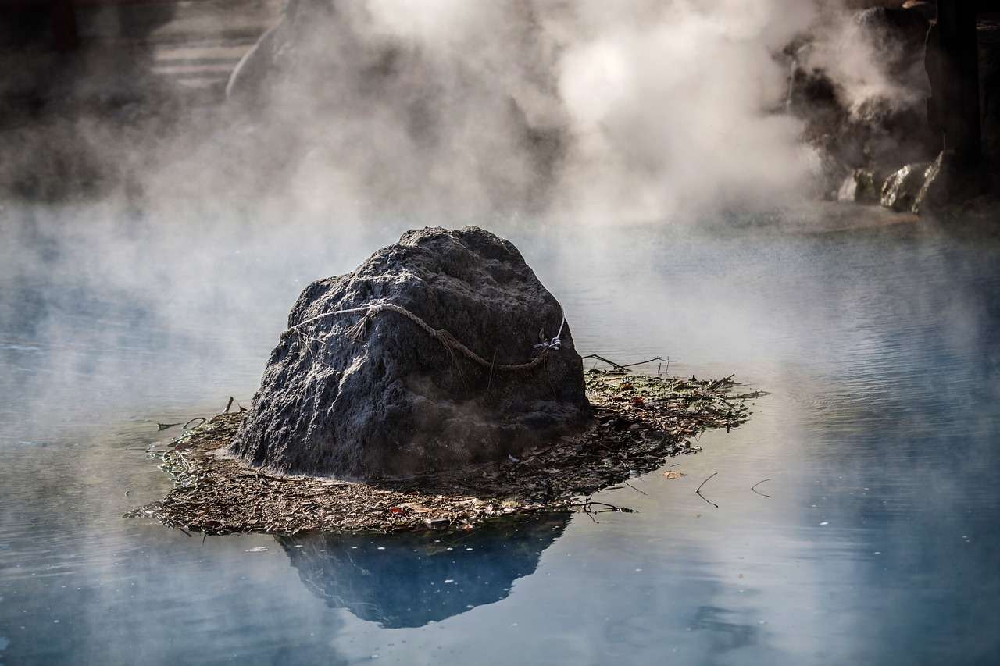
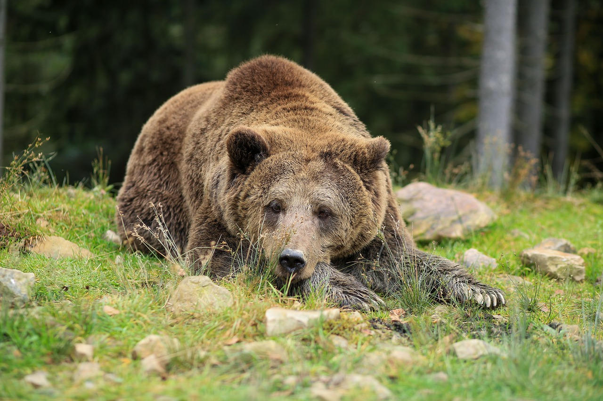
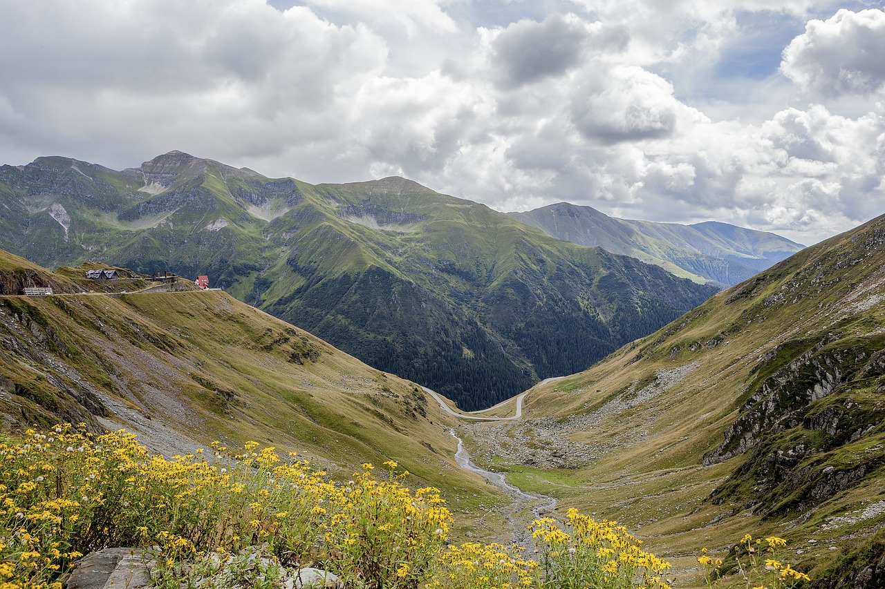
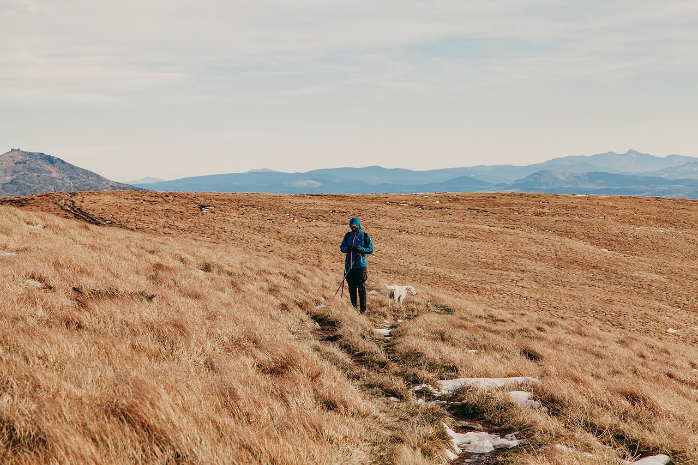
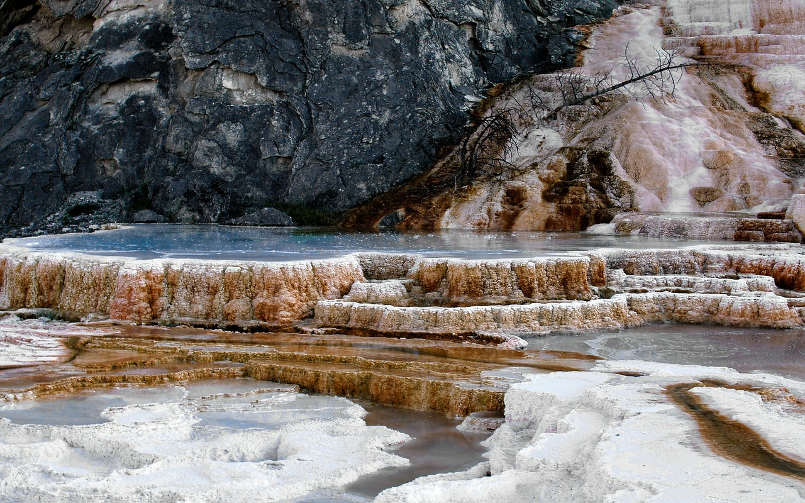

Beautiful Heart of Romania
Tiffany C

My skin feels so silky after this dip
Rodney T

Don't try this at home without a really long lens.
Jeremy H

Such a lovely view of the world down here.
Florence G

This calm scenery makes me never want to leave.
Jodie M

This water made me feel young again
Henry J